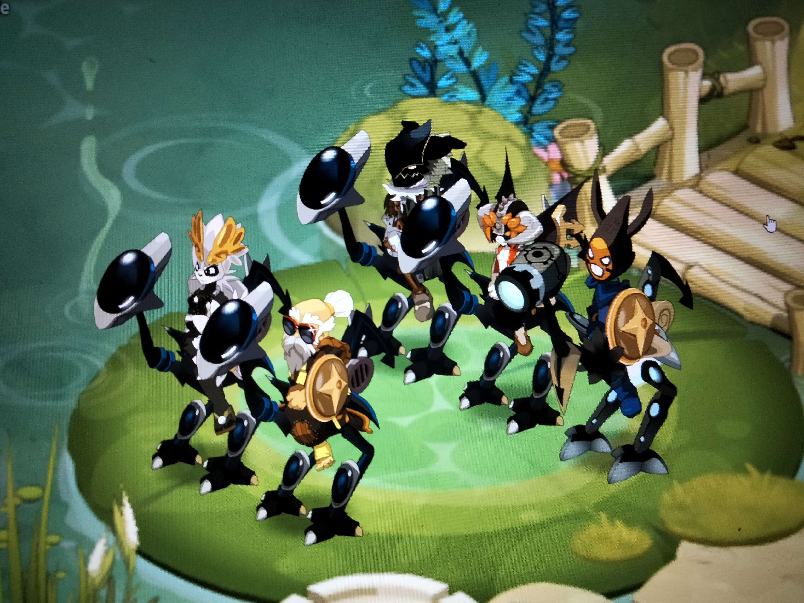
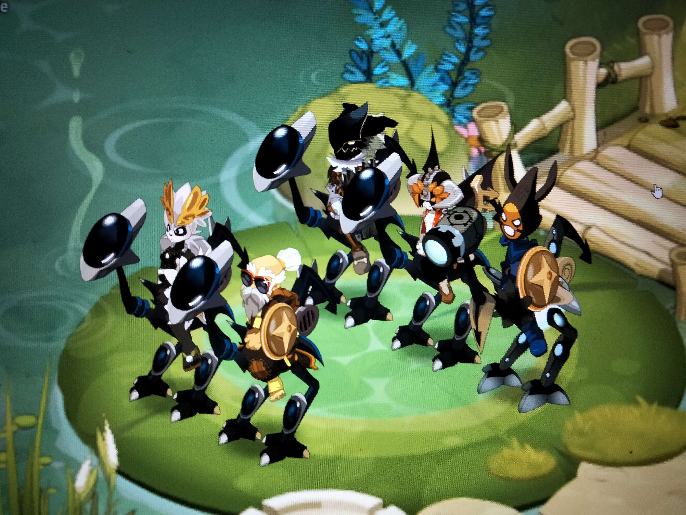

Sortie de la version 3.0 de Dofus
La nouvelle version de Dofus est enfin disponible, avec de nouvelles fonctionnalités passionnantes à découvrir.


Bienvenue chez Les Loustiques, une guilde de joueurs passionnés de Dofus qui ne recule devant aucun défi ! Nous sommes un groupe d'aventuriers qui adorent explorer le monde des Douze et découvrir tout ce qu'il a à offrir. Si vous cherchez une guilde qui met l'accent sur les donjons et l'XP de zone, alors vous êtes au bon endroit. Nous adorons travailler ensemble pour atteindre nos objectifs et nous sommes toujours prêts à aider nos membres à atteindre leur plein potentiel. Rejoignez-nous pour des aventures inoubliables et pour faire partie d'une communauté soudée et passionnée ! L'entraide est une valeur essentielle au sein de notre guilde. Nous croyons que chaque membre de la guilde doit se sentir soutenu et appuyé par ses camarades, et nous mettons tout en œuvre pour que cela soit le cas. Que vous cherchiez de l'aide pour terminer un donjon difficile ou pour monter votre personnage en niveau, vous pouvez être sûr que nos membres se tiendront à vos côtés pour vous aider à atteindre vos objectifs. Nous sommes une guilde où les joueurs s'entraident et partagent leurs connaissances pour que chacun puisse progresser. Nous organisons régulièrement des séances d'entraînement en groupe pour que tous les membres puissent améliorer leurs compétences de combat, ainsi que des sorties de groupe pour explorer de nouvelles zones et découvrir de nouveaux donjons. Si vous cherchez une guilde où l'entraide est une valeur fondamentale, où vous pourrez apprendre et progresser avec d'autres joueurs motivés, alors rejoignez-nous chez Les Loustiques !
La nouvelle version de Dofus est enfin disponible, avec de nouvelles fonctionnalités passionnantes à découvrir.
Les Loustiques organisent une chasse au trésor dans la forêt maléfique pour gagner des récompenses incroyables. Ne manquez pas cette occasion !
 
